Adorable creatures that looked like something that came out of a fairy tale, usually 30 to 40 cm tall and weighting 2 or 3 kg, about the same as a small-sized dog. They had extremely friendly and mild personalities.
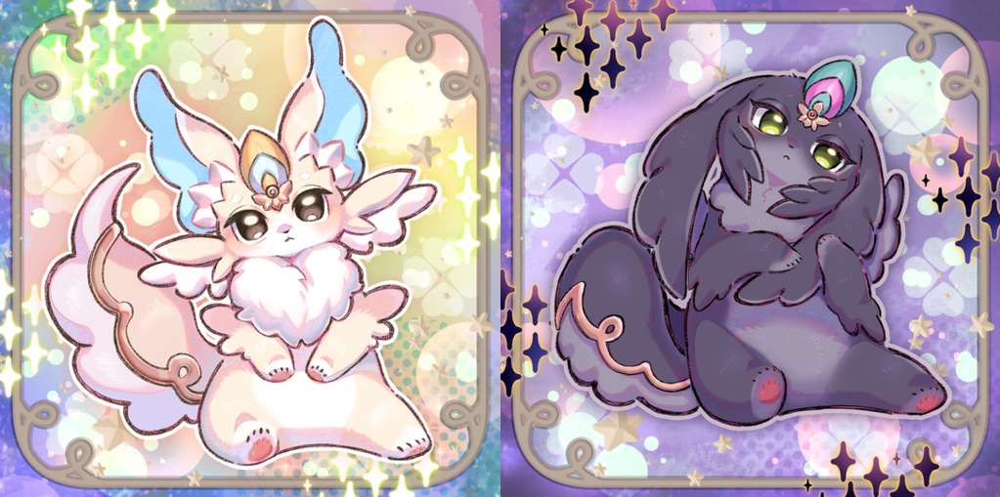
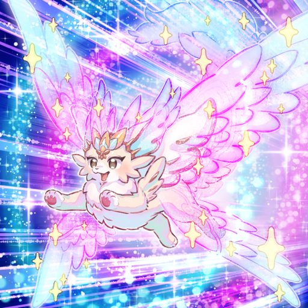
Purrelies who lived with people grew up to roughly a medium-sized dog's size. Basically, their curiosity and friendliness didn't change, but depending on the environment in which they were raised and the way they were treated, they developed distinct identities in terms of appearance and personality.
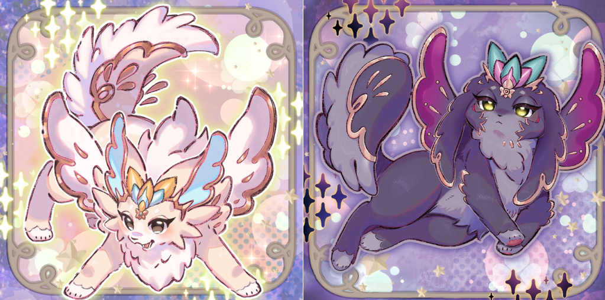
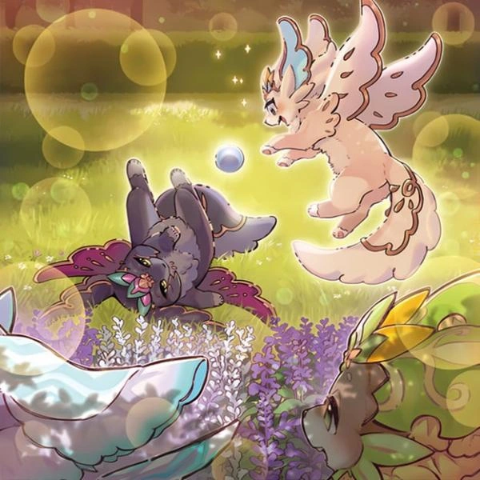
Their bodies had grown to be big enough for a child to ride on. They still tried to play with the same excited behavior they had as pups, as the people they lived with burned through quite a bit of stamina.
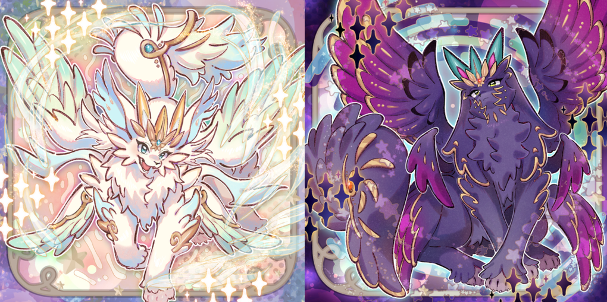
One day, while going home, I found a mud-covered Purrely looking up at me. Where did this pup come from?
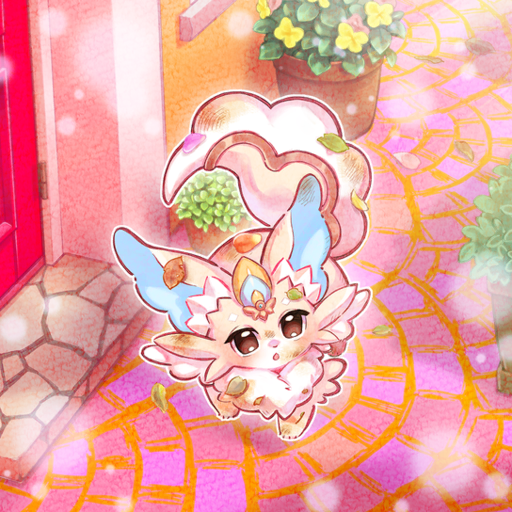
Xth of Y
It really likes playing!
Today it played with its favorite ball as usual. Watching it play really makes me happy!
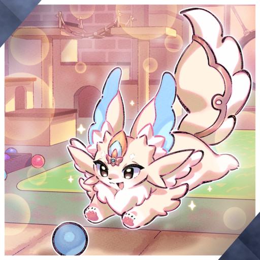
Zth of A
It loves eating! Mom's cooking is so delicious~! I tried to make an omelet for the first time, but cooking really is hard...
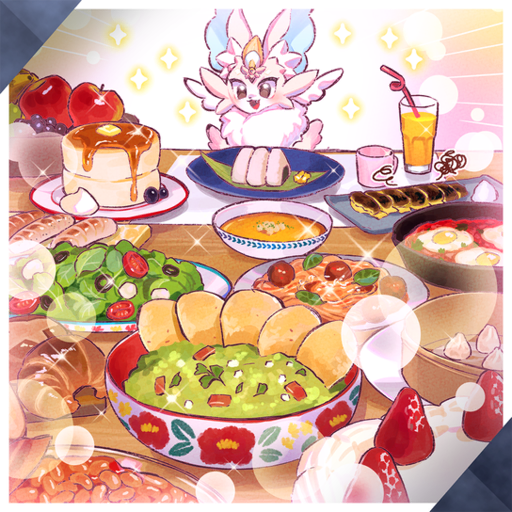
Ath of X
I found an unfamiliar pup coming from the garden when I came home.
Maybe it wants to play together...?
But our pup seems to be dreaming.
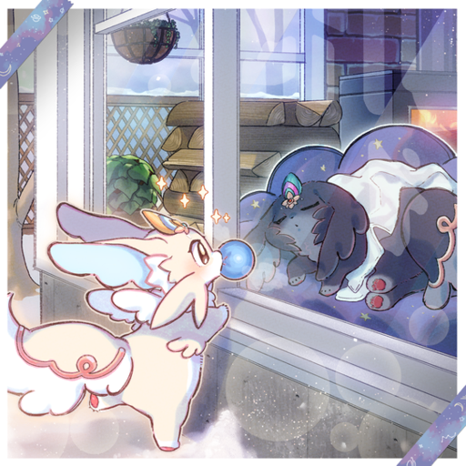
Yth of Z
It doesn't seem to like baths too much...
but it looks so pretty~!
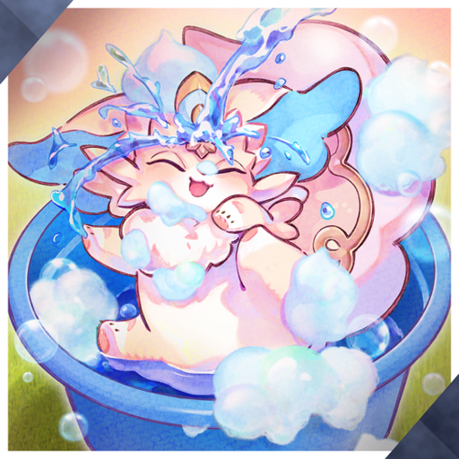
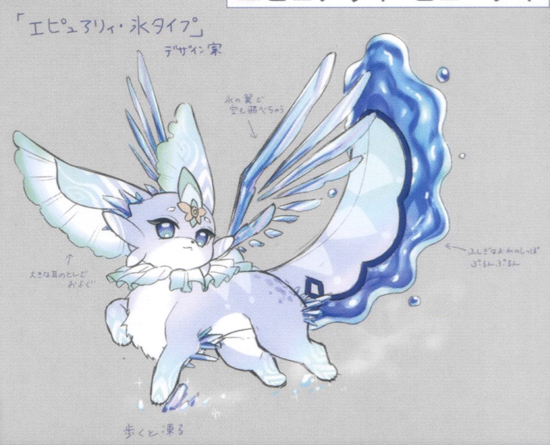
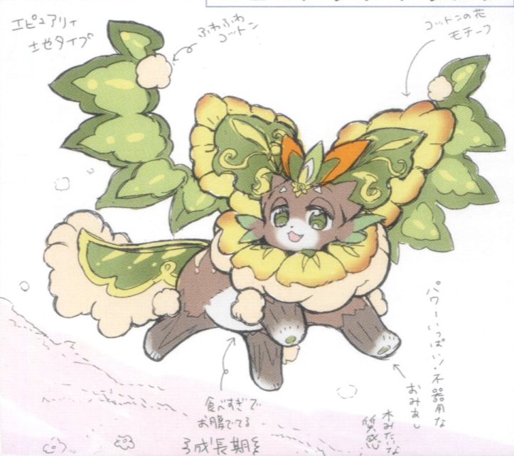